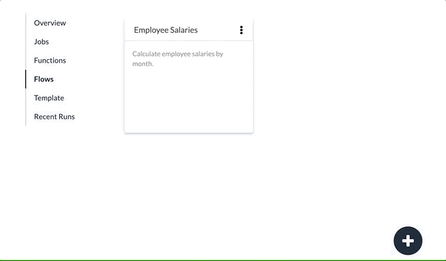

Numbrz Flows
A Flow executes a configurable sequence of Stages. Flow stages read input data, then allow for each record to be handled in turn by a number of calculations and transformations, including executing Functions. Stages output data at various points. The sequence of stages is related by the sharing of data. Data is shared, for example, when data written by one stage is used as input to another. The data may be external (via a Job configuration) or a Working Table defined by the flow.
A Stage processes a set of records by passing them through a sequence of Steps, which configure various transformations and calculations. Stages are complete when all data in the input has been processed. Flows are complete when all stages are complete.
Flows are not bound to specific data stored in any particular data source, but rather specify the general structure of the data they require as input and emit as output. This means that flows can be re-used in various configurations with any data sources that meet these specifications. Jobs are used to map actual data to the flow's requirements and are run to execute the logic of the flow and its stages.
Create a New Flow
To create a new Flow, click the + icon in the lower right corner. You will be prompted for a name. Once created, you can begin adding Stages.
See also: Configure a Flow, About Jobs, About Flow Stages, About Functions